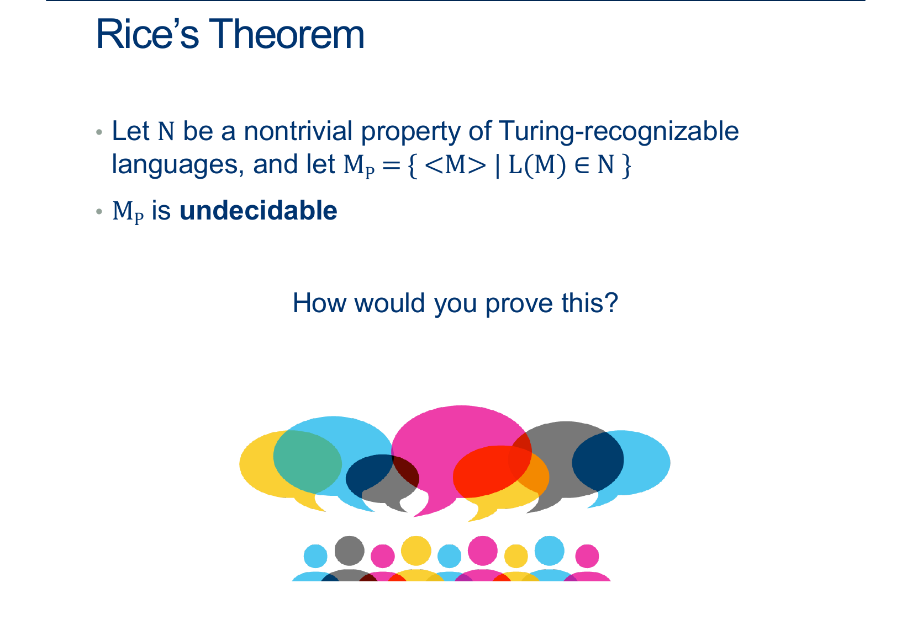
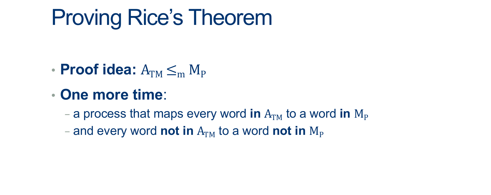
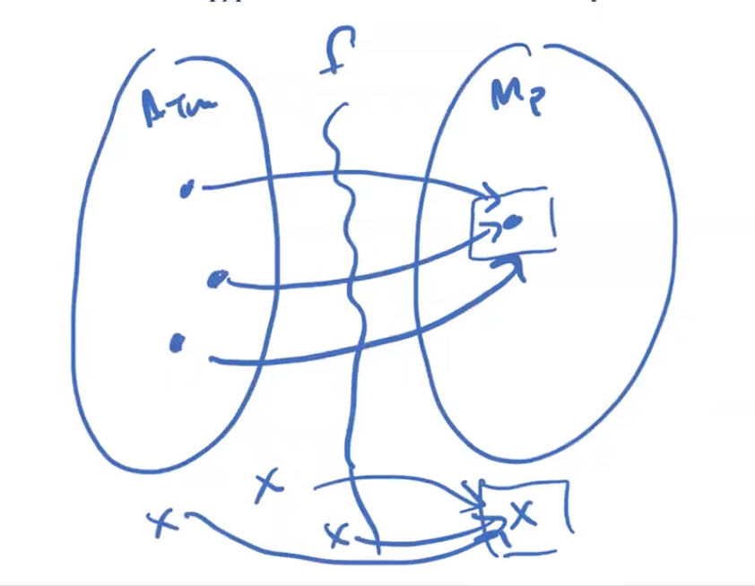
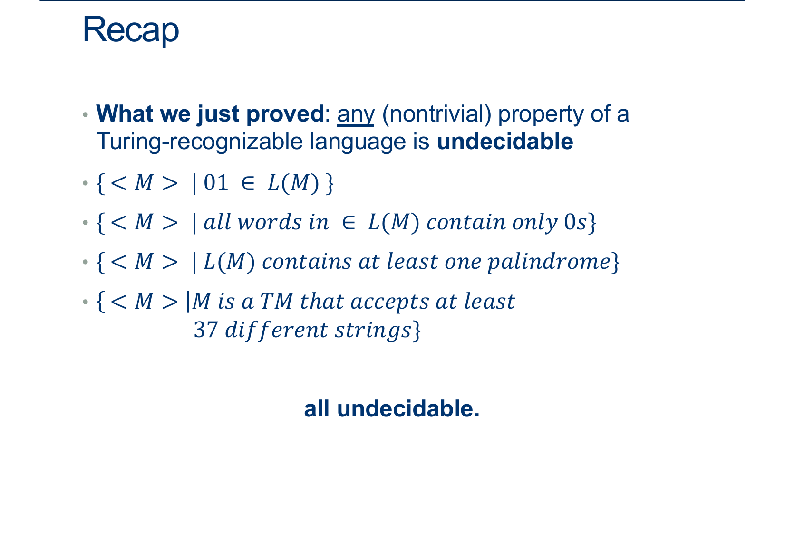
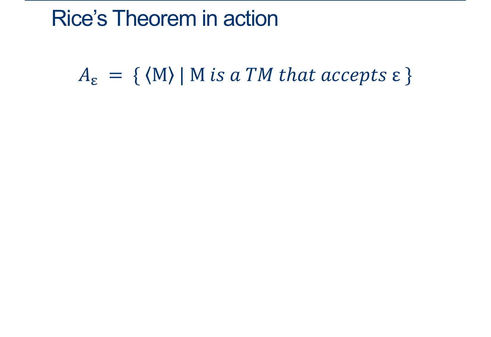

CSC 250
Theory of Computation
Smith Computer Science
Theory of Computation
Smith Computer Science


Remember, we have to be able to deal with any input, but we don’t necessarily have to map them all to unique outputs.
This is why a mapping reduction is sometimes called a “many-one” reduction.

Let’s start by assuming that ∅ ∉ P (that is, it doesn’t exhibit the non-trivial property we care about).
Because we’re trying to prove undecidability, I claim that we can assume this WLOG.
Why? (otherwise, just work with the complement of P).
Let M1 be any TM such that L(M1) = ∅, so < M1 > ∉ MP.
Cool, so now we’ve got something we could map not-in-ATM words to.
Next let M2 be any TM such that L(M2) ∈ P, so < M1 > ∈ MP.
How do we know M2 exists?
Because P is nontrivial.

We have M1 not in P, M2 in P
Goal:
on any input x:
if \(x = < M,w >\) ∈ ATM, map to something in MP
otherwise, map to something not in MP (like M1)
Easy part: If x isn’t of the form \(< M,w >\) return something ∉ MP, like \(< M1>\).
Harder part: If x IS of the form \(< M,w >\) , we have two cases: if it’s in ATM, we want to map it to a machine in MP and if it’s NOT in ATM, we want to map it to something not in MP.

Time to get tricksy:
if x is of the form \(< M,w >\) , then return the following machine: \(< M^{\prime}_{M,w} >\)
\(< M^{\prime}_{M,w} >\) :
On any input y:
Run M on w. #(If stuck on a loop, this is M1!)
If M accepts w then run M2 on y ADWID
If M rejects w, REJECT.
If M accepts w, what is \(< M^{\prime}_{M,w} >\)’s language?
exactly the same as M2’s, which means this machine is in MP
(If M accepts w, then \(< M^{\prime}_{M,w} >\) is just the result of M2)
If M doesn’t accept w, what is its language?
the empty language, exactly like M1, which means NOT in MP
(If M doesn't accept w,\(< M^{\prime}_{M,w} >\) is just M1)
Therefore, ATM \( \leq_m\) MP using this process.
This implies that MP is undecidable

